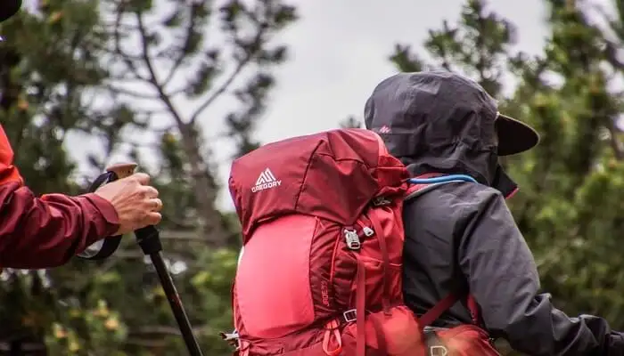
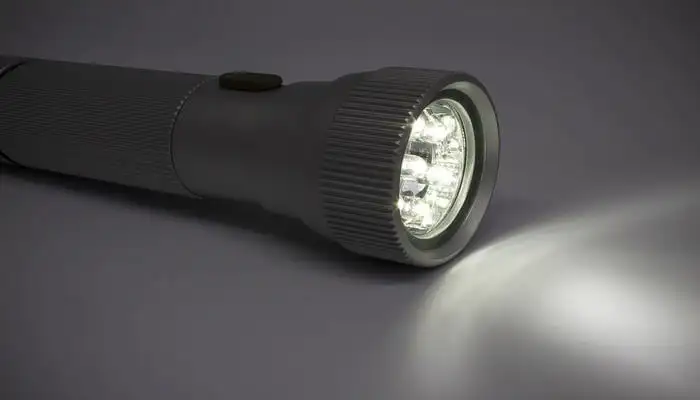

Essentials Things To Taken Care While Trekking
When planning a trek, apart from checking the weather conditions there is another thing to do which is the foremost. Yes, before anything else, it is important to prepare a self-sufficient trekking gear which will be helpful when there is nothing else around. Some of the essential things to carry while trekking are trekking shoes, water bottles and medicines. But apart from that there are many other things which make a great backpack. Fret not, we have your back!
-
Water Bottle – As Hydration Is Important
There is no doubt in this that a water bottle is one of the essential things to carry while trekking. During the hike, the body needs to be kept hydrated throughout the time as at the altitudes it is difficult to find places for water. The only source to find water at this height are the natural streams. While passing through these natural streams one can refill their bottle to keep them hydrated. It will be good to avoid carrying plastic bottles and rather invest in a sturdy water bottle which does not leak.
-
Backpack – The Best Trekking Essential
 -
Trekking Shoes – For Comfort And Strong Grip
The most essential tip to remember while going for a trek is to travel light and also organised. To make sure that you have enough space for important things to carry while trekking, make sure to invest in a good backpack. A good and sturdy backpack helps in keeping everything in an organized way and travel efficiently.
-
Flashlight – For Trekking And Night And Camping
It might sound like an option, but this has to be one of the essential items in the list of things to carry while trekking. In the dark it is very important to have a flashlight handy in the backpack which will help in walking on the trails with quite an ease. A flashlight is also a blessing to find the path to the campsite.
-
Hand Sanitizer – To Keep Germs At Bay
When it comes to trekking or hiking, it is quite obvious that you will come in contact with germs throughout the journey. There are spots where the hands automatically reach out for support or climb out during the treks. These unusual spots make the hands more prone to germs. To decrease the risk of getting sick, it is essential to carry a hand sanitizer during the trek.
-
Personal Medical Kit – A Great Help

This is one of the essential things to carry while trekking which will be a saviour for minor health issues. The basic medical kit must contain things like burns, bruises, antiseptic lotions, bandages and bandaids. In case of emergency, these items are the life saviours which will definitely help you and other fellow hikers and trekkers. Make a list of medicines to carry while trekking and ensure you’re carrying them all.
-
Trek Map – Keeping You On The Right Track
The trek map is one of the must have things while trekking which is a good alternative for the GPS device. It is important to bring along a hard copy of the map as there are some regions where it is difficult to connect with a GPS or in the major cases the battery may run out. In these situations, it is important to have a trek map.
-
Powerbank – Keep Your Gadgets Charged

In case of emergencies, it is always advisable to carry a power bank. During the trek, there are rare chances to get a charging slot or space for charging, thus it is important to carry a power bank in case the phone battery drains out.
-
Swiss Knife – Handiest Thing To Carry
This too is quite a useful tool to carry along when going for a trekking trip. Since there are various blades available in this tool, this can be one of the best things to carry during trekking. This multi-purpose tool can come in handy during emergencies
-
Raincoat – Saving You From Harshness Of Weather
Rainfall in mountains can be quite unpredictable and therefore carrying an umbrella or raincoat will be of help. A raincoat, however, is a better choice as holding an umbrella throughout the trek can be a bit inconvenient. However, it is equally important to make sure that the quality of your raincoat is extremely great in order to stand the rough weather.